My Collection
| Title - Artist - Series | Format | Label | Released | |
|---|---|---|---|---|
| 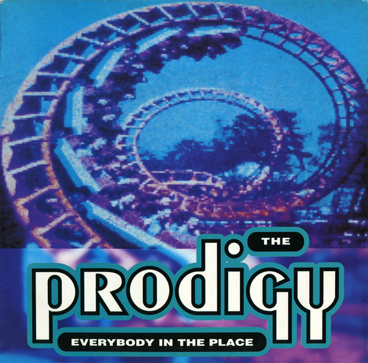 | Everybody in the Place The Prodigy |
12", 33 ⅓ RPM, stereo | XLT-26 |
 1992 |
| 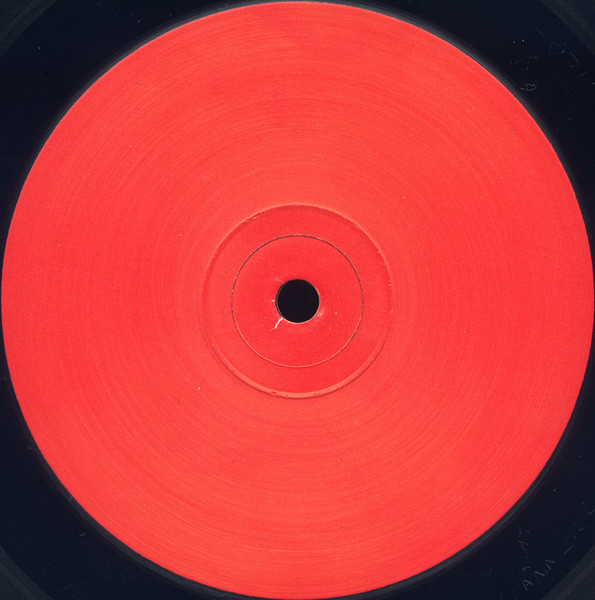 | Universal Indicator Red Universal Indicator (Richard D. James / Aphex Twin) Universal Indicator - Red |
EP (12", 33 ⅓ RPM) | 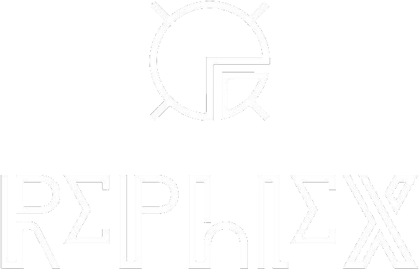 TR 606 |
1992 |
| 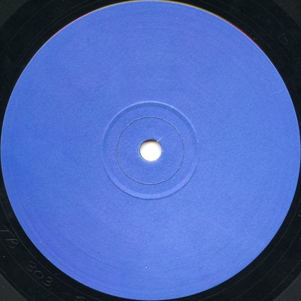 | Universal Indicator Blue Universal Indicator (Mike Dred / The Kosmik Kommando) Universal Indicator - Blue |
EP (12", 33 ⅓ RPM) | TB 303 |
1992 |
| 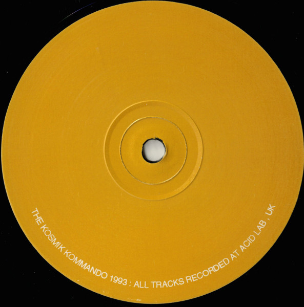 | Universal Indicator Yellow Universal Indicator (Mike Dred / The Kosmik Kommando) Universal Indicator - Yellow |
EP (12", 45 RPM, 33 ⅓ RPM) |
MC 202 |
1993 |
| 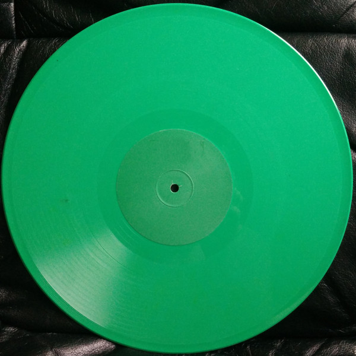 | Universal Indicator #4 (Green) Universal Indicator (Richard D. James / Aphex Twin) Universal Indicator - Green |
12", 45 RPM 10", 33 ⅓ RPM 7", 45 RPM |
SH-101 |
24 Apr 1995 |
| 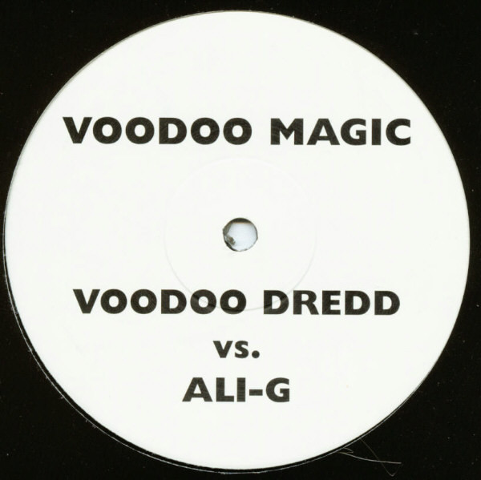 | Keep It Real / Voodoo Magic Voodoo Dredd vs. Ali-G | Single (10", 33 ⅓ RPM) | ALI 1 | Nov 1999 |
 |
I Wanna 1-2-1 With You Solid Gold Chartbusters | Single (CD, enhanced) |  VSCDT 1765 7243 8 96439 0 9 |
13 Dec 1999 |
| 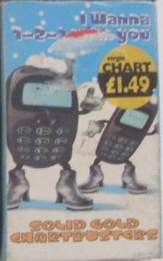 | I Wanna 1-2-1 With You Solid Gold Chartbusters | Single (Cassette) | VSC 1765 |
 1999 |
| Party Time The Cheeky Girls | Album (CD, enhanced) | 2467 80113 2 TWR0113-2 |
 2003 |
|
| Party Time The Cheeky Girls | Album (CD, enhanced, reissue) | MULTYCD13X |
~Dec 2003 |
|
| I'm Betta Than U Vol. 1 Big N.A.R.S.T.I.E | Album (CDr) DVD-Video (DVDr) |
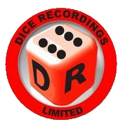 | 2005 |
|
| 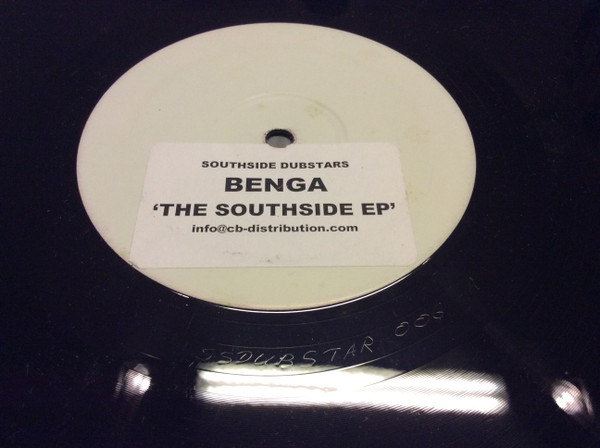 | The Southside EP Benga |
12", Promo, White Label |  SS DUBSTAR 006 |
17 Jul 2006 |
| 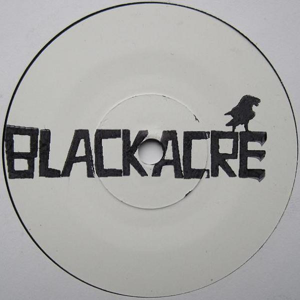 | Jeremy Kyle Akira Kiteshi | EP (7", White Label, Limited Edition) |  TEAMACRE 001 |
May 2009 |
| 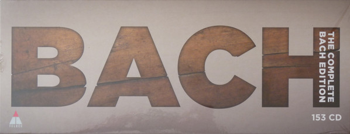 | The Complete Bach Edition Bach | Compilation, box set (153xCD, reissue) | 0190295703035 |
16 Feb 2018 |